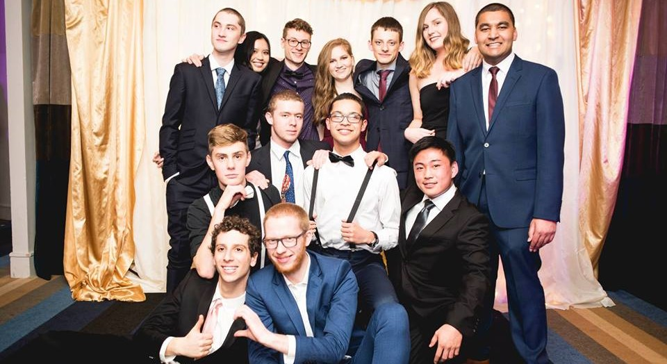

Auckland University
I’ve really had a blast over the past few years at Auckland. From all the friends I’ve made to all the new and exciting knowledge I’ve gained; the heavy workload has certainly been worth it. I came to Auckland University with the goal of becoming an engineer. Of what kind? It didn’t matter. As long as I was set up to work in an industry filled the maths and applied problem solving that I enjoy so much.
It wasn’t long until we had our first exposure to computer programming. In year one we would be exposed to the lovable languages Matlab and C, at which point I began to realize writing code was something I really enjoyed. Selecting the software engineering specialization was a pretty easy decision for me, and I haven’t regretted a minute of it!
More than anything, university has taught me that above all, engineering is about generating solutions. I’ve gained a healthy determination for creating clean and structured solutions to a lot of real-life problems and have been able to dip my toe into a wide variety of technologies through my time studying.
Year two was our first real taste of computer programming from an engineer’s point of view. It was a steep learning curve, but an incredibly valuable experience. I speak for my cohort when I say it gave us a healthy understanding of the work ethic required to achieve in engineering, and we have all become far better workers as a result. We were exposed to object-oriented programming through Java and took a crash course in design patterns as well as writing correct, maintainable code that adhered to the SOLID principles. We would also study the hardware relationship with software, the science behind algorithms and mathematical proofs, principles of data analysis and quality assurance to name a few subjects.
Year three has proven to be just as engaging and challenging. So far, we have studied the fundamentals of database systems, network functionality (specifically the internet) and the processes behind optimising human-computer interaction.
Courses:
|
|
|---|
Reading List
-

Design Patterns: Elements of Reusable Object-Oriented Software (1994): I've been making my way through this book since the beginning of 2018. One of the staples of any software engineering textbook collection, it's been fantastic for gaining a deeper understanding of common design patterns and what it means to write code that makes the most of the object-oriented design philosophy.
-

Programming C# 5.0 (2012): I've been complementing my practical learning of C# at work with some in-depth reading of the language. Learning more about the .NET framework and how C# and other languages run over it has proven to be really rewarding.
-

Interaction Design: Beyond Human-Computer Interaction (2002): We've been given this material to read for one of our university courses, and it's fair to say I've really gained an apprecition for it. I find the process of design to be really engaging and a great exercize in applying engineering skills to real-life problems.